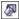

Быстрые ссылки на процедуры, описанные на этой странице:
• |
• |
Заливка текстурой — это заливка, созданная произвольно, которая используется, если требуется придать объекту естественный вид. CorelDRAW предоставляет готовые текстуры, причем каждая текстура имеет ряд параметров, которые можно изменять. Для настройки заливок текстурой можно использовать цвета любой цветовой модели или палитры. В заливках текстурой используются только цвета RGB. Однако для справки можно использовать другие цветовые модели и палитры. Для получения сведений о цветовых моделях см. раздел Общие сведения о цветовых моделях.
Можно изменить размер заливки текстурой. При повышении разрешения плитки текстуры улучшается точность заливки. Кроме того, можно точно указать начало заливки, задав начало плитки. В CorelDRAW также можно смещать плитки в заливке. Настройка положения первой плитки по горизонтали и вертикали относительно верхней части объекта влияет на остальную область заливки.
Чтобы создать собственную заливку, ее можно поворачивать, наклонять, настраивать размер и изменять центр текстуры.
Если требуется изменить заливку текстурой в соответствии с действиями, выполненными относительно объекта с заливкой, можно задать преобразование заливки вместе с объектом. Например, при увеличении объекта с заливкой размер текстуры увеличивается, а число плиток остается прежним.
Заливки текстурой могут улучшить рисунок. Однако при использовании заливки текстурой увеличивается размер файла, а также время, которое требуется для печати. Поэтому, возможно, заливки текстурой будут использоваться нечасто.
| Применение заливки текстурой |
1. |
Выделите объект.
|
2. |
Выберите Изменить |
3. |
В окне настройки Свойства объекта нажмите кнопку Заливка
текстурой , чтобы отобразить параметры заливки текстурой.
|
4. |
Выберите библиотеку текстур в списке Заливка текстурой.
|
5. |
Выберите текстуру в палитре Заливка текстурой.
|
Заливку текстурой можно также применить нажатием кнопки
Заливка текстурой в наборе инструментов с последующим
выбором текстуры в диалоговом окне Заливка текстурой.
|
| Создание специальной заливки текстурой |
1. |
Выделите объект.
|
2. |
В наборе инструментов нажмите кнопку Заливка текстурой .
|
3. |
Выберите в списке Библиотека текстур библиотеку текстур.
|
4. |
Выберите текстуру в списке Текстура.
|
5. |
Задайте необходимые параметры в области атрибутов текстуры.
|
Можно изменить текстуру, выбранную в библиотеке текстур, и
сохранить ее в другой библиотеке. Однако в библиотеке текстур
нельзя сохранять текстуры или заменять существующие текстуры.
|
Плитки текстуры можно удалить путем ввода значения 0 в полях X и
Y в области Начало координат.
|
Можно сохранить специальную заливку текстурой, выбрав знак
плюса (+) в диалоговом окне Заливка текстурой и введя имя заливки
в поле Имя текстуры.
|
Заливку текстурой можно также отредактировать в разделе Заливка
окна настройки Свойства объекта. Нажмите кнопку Заливка
текстурой , чтобы отобразить параметры заливки текстурой, а
затем нажмите кнопку Свойства заливки текстурой , чтобы
открыть диалоговое окно Заливка текстурой. Далее задайте
необходимые параметры.
|
Copyright 2012 Corel Corporation. Все права защищены.